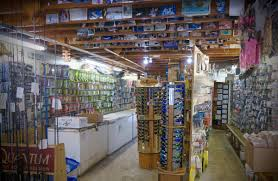

Hope Mills Bait Shop is a small local store that sells live bait, fishing tackle, snacks, and drinks for people fishing at Hope Mills Lake and nearby ponds. The shop is designed to be a quick stop for anglers before heading out to fish.
1234 Lake Pond St.
Hope Mills, NC 28348
Copyrights 2026